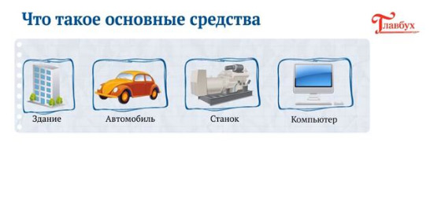

|
Все курсы
Материалы |
5000
|
|||
|
|
+150
Сдать тест
|
||
|
|
||||
Продажа и прочее выбытие СкачатьЗдравствуйте! В этом курсе я вкратце расскажу обо всех основных моментах, которые нужно знать о материалах. Материалы — это вид запасов. Из них изготавливают что-либо или используют в хозяйственной деятельности компании. Примеры материалов:  АмортизацияСтоимость списывают на затраты не единовременно, а постепенно — через амортизацию. Способы ее начисления:
Выбранный способ компания закрепляет в учетной политике. Компания вправе применять разные способы начисления амортизации к различным группам однородных основных средств. Продажа и прочее выбытиеЧтобы отразить в бухгатерском учете продажу или списание основного средства, на счете 01 откройте отдельный субсчет «Выбытие основных средств». Дебет 01 субсчет «Выбытие основных средств» Кредит 01 — отражена первоначальная стоимость выбывающего основного средства; Дебет 02 Кредит 01 субсчет «Выбытие основных средств» — отражена амортизация, начисленная за период эксплуатации объекта. Доходы от выбытия основного средства (например, выручку от продажи) отразите в составе прочих доходов. Например, при продаже основного средства проводка будет такой: Дебет 62 (76) Кредит 91-1 — отражена выручка от реализации основго средства. |
РекомендуемВ бумажной и электронной версиях
|
|||